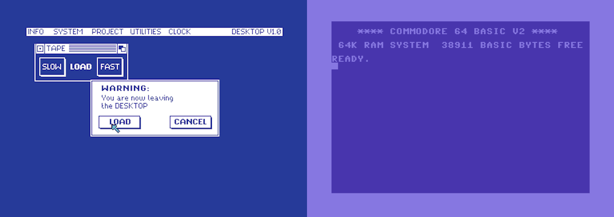
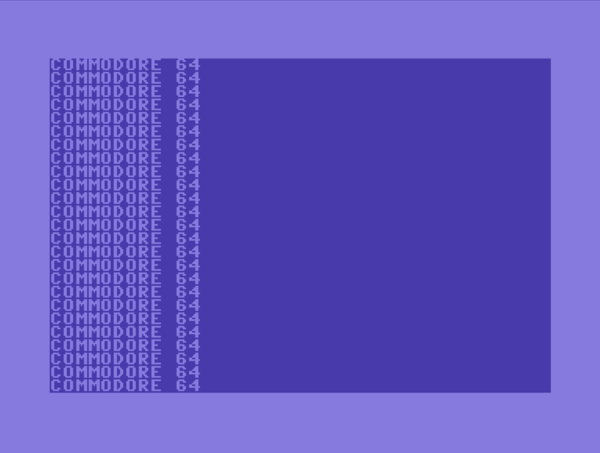
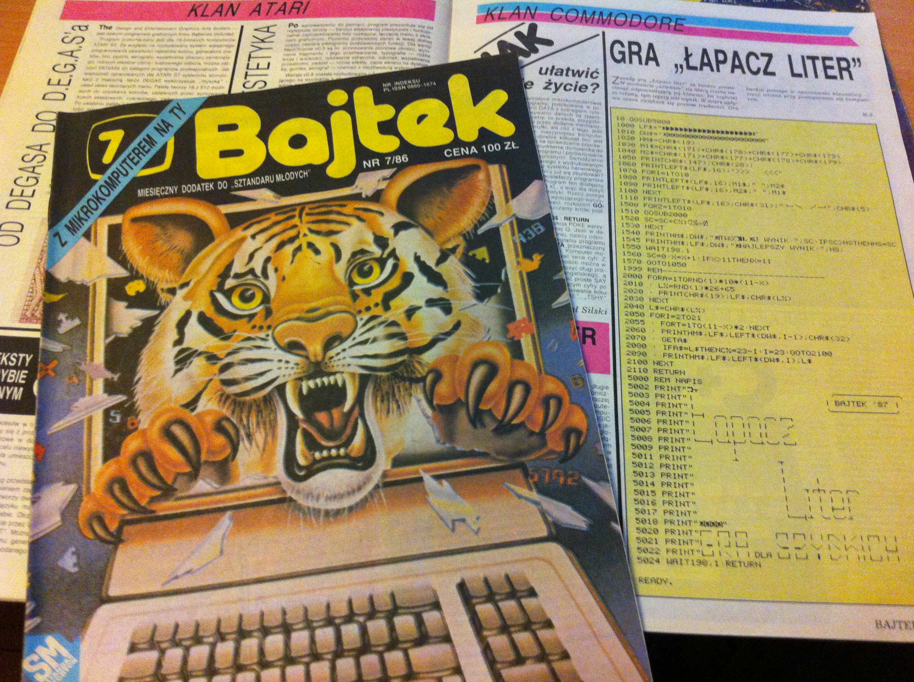
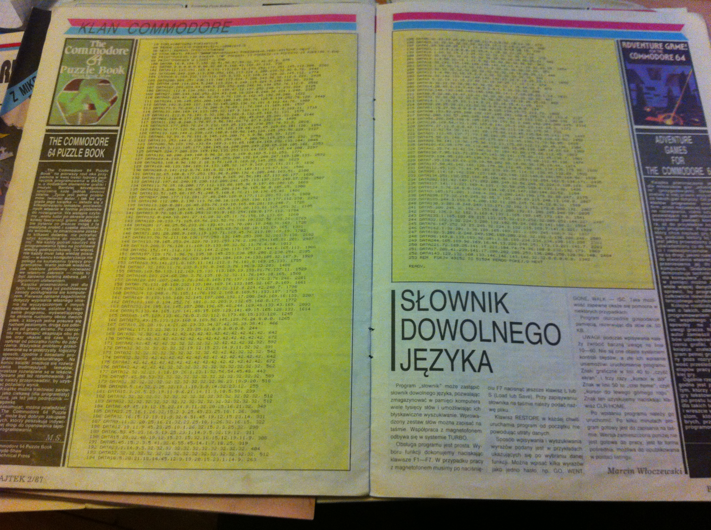

My Very First Computer Program
The first program I've ever written had only two lines:
10 PRINT "COMMODORE 64"
20 GOTO 10
Once I've run it. My life changed forever…
Long time ago…
When I was in primary school. I used to play games on my friend's Commodore 64. We used to put the cassette in, press play on tape and wait patiently for 5-20 minutes until the game loaded.
Or not…
In that case, we needed to rewind the tape and repeat the whole process.
Fun times.
Some time later, I've got my C64 from my grandpa. However, as soon as I turned it on, I've discovered that my friend owned a Final III cartridge that I didn't have. It meant that instead of seeing familiar window-based GUI, I've seen only the blinking cursor under the word READY.

This, in turn, meant, that I was unable to load any games.
The horror!
Fortunately, with a help of a more computer savvy friend and a manual, I've learned how to use the LOAD and RUN commands. But the blinking cursor was somehow inviting me to do more with it. I knew that you could do more than play games on a C64. I just didn't know how.
Typing in programs
I started digging deeper into the manual, and I've found a part about writing programs. Soon, I've typed the following two lines.
10 PRINT "COMMODORE 64"
20 GOTO 10
As soon as I've run it, the computer started printing its name endlessly.

Now it doesn't seem like a significant achievement. But for me, it was mesmerizing.
I wrote my first program.
I didn't stop there. After reading a manual, I've learned about IF statements, FOR loops, and I was somewhat able to write a few simple programs. But the examples in the handbook were kind of boring. Without access to the Internet (that was Poland in early nineties) and no books about programming C64 in the library, the only place I could find any resources on programming were slowly dying computer magazines.
In each of them, you could find a program or two to type in on your computer.

Some were written in pure BASIC. In those rare cases, you could at least learn something by reading the code. But most were a machine language programs encoded in enormous DATA sequences, like the one below.

Imagine typing this monstrosity.
Not hardcore enough? Then imagine you don't know how to save this program on a tape, and you press reset button by accident at line 240.
Yes, my early programming experiences involved a lot of crying in frustration.
But I still remember this time fondly. I didn't exactly knew what I was doing. But every time I typed a long program, and it finally worked, I felt like a magician.
Commodore 64 lives!
Those experiences were directly responsible for my becoming a professional software developer. Although I couldn't believe at first that C does not need its lines numbered like BASIC does. Even though computers were not so magical anymore, once I've learned how they work.
I went back to C64 few years ago to master the 6502 assembly finally and to create a game, a demo and learn mysterious hacks that made this computer, so fun to program. Now, everything is much simpler to learn than when I was a kid, but it's still as fun as it was before.
Seeing a subroutine called from an interrupt for the first time, was the same kind of magical experience for me. But that's a story for another article.